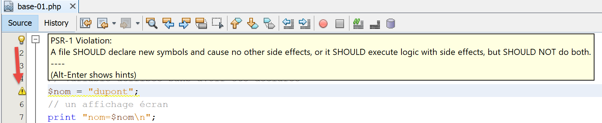
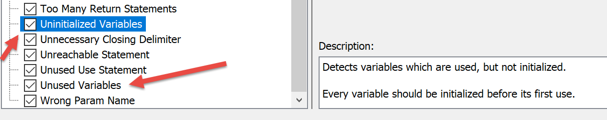

3. The Basics of PHP
3.1. The script directory structure

3.2. PHP Configuration
PHP comes preconfigured via a text file [php.ini]. All of these settings can be changed programmatically. PHP configuration greatly influences script execution. It is therefore important to understand it. The following script [phpinfo.php] allows you to do so:
Comments
- line 3: the [phpinfo] function displays the PHP configuration;
Execution results
The [phpinfo] function displays over 800 configuration lines here. We won’t comment on them because most pertain to advanced PHP usage. An important line is line 13 above: it indicates which [php.ini] file was used to configure the PHP you’ll use to run your scripts. If you want to change the PHP runtime configuration, this is the file you need to edit. There are many comments in this file explaining the role of the various settings.
3.3. A first example
3.3.1. The code
Below is a program [bases-01.php] that demonstrates the basic features of PHP.
<?php
// this is a comment
// variable used without being declared
$name = "dupont";
// a screen display
print "name=$name\n";
// an array with elements of different types
$array = array("one", "two", 3, 4);
// its number of elements
$n = count($array);
// a loop
for ($i = 0; $i < $n; $i++) {
print "array[$i] = $array[$i]\n";
}
// Initializing 2 variables with the contents of an array
list($string1, $string2) = array("string1", "string2");
// concatenating the two strings
$string3 = $string1 . $string2;
// display result
print "[$string1,$string2,$string3]\n";
// using the function
display($string1);
// the type of a variable can be determined
displayType("n", $n);
displayType("string1", $string1);
displayType("array", $array);
// A variable's type can change during execution
$n = "has changed";
displayType("n", $n);
// a function can return a result
$res1 = f1(4);
print "res1=$res1\n";
// a function can return an array of values
list($res1, $res2, $res3) = f2();
print "(res1,res2,res3)=[$res1,$res2,$res3]\n";
// we could have retrieved these values into an array
$t = f2();
for ($i = 0; $i < count($t); $i++) {
print "t[$i]=$t[$i]\n";
}
// tests
for ($i = 0; $i < count($t); $i++) {
// only displays strings
if (getType($t[$i]) === "string") {
print "t[$i] = $t[$i]\n";
}
}
// comparison operators == and ===
if("2"==2){
print "With the == operator, the string 2 is equal to the integer 2\n";
}else{
print "with the == operator, the string 2 is not equal to the integer 2\n";
}
if("2"===2){
print "With the === operator, the string 2 is equal to the integer 2\n";
}
else{
print "with the === operator, the string 2 is not equal to the integer 2\n";
}
// other tests
for ($i = 0; $i < count($t); $i++) {
// only displays integers >10
if (getType($t[$i]) === "integer" and $t[$i] > 10) {
print "t[$i]=$t[$i]\n";
}
}
// a while loop
$t = [8, 5, 0, -2, 3, 4];
$i = 0;
$sum = 0;
while ($i < count($t) and $t[$i] > 0) {
print "t[$i]=$t[$i]\n";
$sum += $t[$i]; //$sum=$sum+$t[$i]
$i++; //$i=$i+1
}//while
print "sum=$sum\n";
// end of program
exit;
//----------------------------------
function display($string) {
// display $string
print "string=$string\n";
}
//display
//----------------------------------
function displayType($name, $variable) {
// displays the type of $variable
print "type[variable $" . $name . "]=" . getType($variable) . "\n";
}
//displayType
//----------------------------------
function f1($param) {
// add 10 to $param
return $param + 10;
}
//----------------------------------
function f2() {
// returns 3 values
return array("one", 0, 100);
}
?>
The results:
name=dupont
array[0]=one
array[1]=two
array[2]=3
array[3]=4
[string1, string2, string1string2]
string = string1
type[variable $n] = integer
type[variable $string1] = string
type[variable $array] = array
type[variable $n] = string
res1 = 14
(res1,res2,res3)=[1,0,100]
t[0] = one
t[1] = 0
t[2] = 100
t[0] = 1
With the == operator, the string 2 is equal to the integer 2
with the === operator, string 2 is not equal to the integer 2
t[2]=100
t[0]=8
t[1]=5
sum=13
Comments
- line 5: In PHP, you don’t declare variable types. Variables have a dynamic type that can change over time. $name represents the variable with the identifier name;
- line 7: to display output on the screen, you can use the print statement or the echo statement;
- line 9: the keyword array is used to define an array. The variable $name[$i] represents the $i-th element of the $array array;
- line 11: the function count($tableau) returns the number of elements in the $tableau array;
- lines 13–15: a loop. Since this loop contains only one statement, curly braces are optional. In the rest of this document, we will always use curly braces regardless of the number of statements;
- line 14: strings are enclosed in double quotes " or single quotes '. Inside double quotes, the variables $variable are evaluated, but not inside single quotes;
- line 17: the list function allows you to group variables into a list and assign a value to them with a single assignment operation. Here, $chaine1="chaine1" and $chaine2="chaine2";
- line 19: the . operator is the string concatenation operator;
- lines 83–86: the keyword `function` defines a function. A function may or may not return values using the `return` statement. The calling code can ignore or retrieve the results of a function. A function can be defined anywhere in the code.
- line 92: the predefined function getType($variable) returns a string representing the type of $variable. This type may change over time;
- Line 45: The === operator performs a strict comparison of two elements: they must be of the same type to be compared. The == operator is less strict: two elements can be equal without being of the same type. This is demonstrated by the statements on lines 50–60. In the case of the == operator, the comparison is performed after casting both elements being compared to the same type. Implicit conversions then take place. It is quite easy to “forget” about these implicit conversions and thus end up with unexpected results, such as discovering that a condition is true when you expected it to be false. To avoid this pitfall, we will systematically use the === comparison operator;
- line 64: you can also use the Boolean operators or and !;
- line 69: instead of the array() notation, you can use the [] notation to initialize an array in PHP 7;
- line 80: the predefined exit function stops the script from running;
- line 107: the ?> tag marks the end of the PHP script. It is not essential. Furthermore, in a web context, it can cause problems if followed by spaces or line breaks, which are difficult to detect because they are not visible in a text editor. Therefore, in the rest of this document, we will consistently omit this tag;
Note: In this document, we will use the keyword [print] to display text on the console. Another way to do the same thing is to use the keyword [echo]. There are subtle differences between these two keywords, but in the context of this document, there will be none. So if you prefer to use [echo], then do so.
3.3.2. Using NetBeans
NetBeans issues various warnings that are worth checking. Let’s take the example of the [bases-01.php] script:

On line 5, NetBeans issues a warning that the file does not comply with the PSR-1 recommendation (PHP Standard Recommendations No. 1). PSRs are recommendations for producing standard code to facilitate interoperability and maintenance of code written by different people. It can be annoying to get warnings if you want to deliberately break the standards, for example because the project team has different ones. What you want to check or not with NetBeans is configurable:

- in [5], you’ll find the elements you want to check with NetBeans;
- in [6], the severity level assigned to the error reported by NetBeans;

In [7], you can see that we’ve requested to check that the code follows the PSR-0 and PSR-1 recommendations. Nothing is mandatory. When learning the language, it’s advisable to check as many of the options offered by NetBeans as possible. You’ll learn a lot that way. You can then adapt these NetBeans checks to your project team’s coding standards.
Let’s look at the PSR-1 coding standards [8, 9]:
Option | Check |
| Class constants MUST be declared in all uppercase with underscore separators. Ex: const TAUX_TVA |
| Method names MUST be declared in camelCase(). Ex: public function executeBatchTaxes{} |
| Property names SHOULD be declared in $StudlyCaps, $camelCase, or $under_score format (consistently within a scope) Ex: public AnnualSalary (StudlyCaps), public annualSalary (camelCase), public annual_salary (underscore) |
| A file SHOULD declare new symbols and cause no other side effects, or it SHOULD execute logic with side effects, but SHOULD NOT do both. |
| Type names MUST be declared in StudlyCaps (Code written for 5.2.x and earlier SHOULD use the pseudonamespacing convention of Vendor_ prefixes on type names). Each type is in its own file and is in a namespace of at least one level: a top-level vendor name. Ex: class ScholarshipStudent {} |
The PSR-1/4 recommendation states that a PHP file must contain:
- either a type declaration (classes, interfaces);
- or executable code without declarations of new types;
There are other PHP recommendations not enforced by NetBeans: PSR-3, PSR-4, PSR-6, PSR-7, and PSR-13.
For simplicity, not all examples in this document adhere to the PSR-1 recommendation, as this would require splitting class and interface code into separate files, which is too cumbersome for basic examples. It is therefore easier to put everything in a single file. For the example application presented as the central theme of this document, we have endeavored to follow the PSR-1 recommendation as closely as possible.
Some NetBeans warnings indicate a potential error:

The [Uninitialized Variables] warning indicates a probable error, often a typo in a variable name. The same applies to the [Unused Variables] warning.
Finally, it is recommended that you check all NetBeans warnings, which are indicated by a banner in the left margin of the code and a yellow dash in the right margin:


3.4. Variable scope
3.4.1. Example 1
The [bases-02.php] script is as follows:
<?php
// variable scope
function f1() {
// we use the global variable $i
global $i;
$i++;
$j = 10;
print "f1[i,j]=[$i,$j]\n";
}
function f2() {
// we use the global variable $i
global $i;
$i++;
$j = 20;
print "f2[i,j]=[$i,$j]\n";
}
function f3() {
// we use a local variable $i
$i = 4;
$j = 30;
print "f3[i,j]=[$i,$j]\n";
}
// tests
$i = 0;
$j = 0; // these two variables are not known to a function f
// only if the function explicitly declares them using the global statement
// that it wants to use them
f1();
f2();
f3();
print "test[i,j]=[$i,$j]\n";
The results:
Comments
- Lines 29–30: define two variables, $i and $j, in the main program. These variables are not known within the functions. Thus, in line 9, the variable $j in function f1 is a local variable of function f1 and is different from the variable $j in the main program. A function can access a variable $variable in the main program using the keyword global;
- line 7, the statement refers to the global variable $i of the main program;
3.4.2. Example 3
The script [bases-03.php] is as follows:
<?php
// a variable's scope is global to code blocks
$i = 0; {
$i = 4;
$i++;
}
print "i=$i\n";
The results:
Comments
In some languages, a variable defined inside curly braces has the scope of those braces: it is not known outside of them. The results above show that this is not the case in PHP. The variable $i defined on line 5 inside the curly braces is the same as the one used on lines 4 and 8 outside of them.
3.5. Type Changes
Variables in PHP do not have a fixed type. Their type can change during execution depending on the value assigned to the variable. In operations involving data of various types, the PHP interpreter performs implicit conversions to bring the operands into a common type. These implicit conversions, if unknown to the developer, can be a source of errors that are difficult to detect. Below is a script [bases-04.php] demonstrating implicit and explicit conversions:
<?php
// Strict types in parameter passing
declare(strict_types=1);
// implicit type conversions
// type -->bool
print "Conversion to a boolean------------------------------\n";
showBool("abcd", "abcd");
showBool("", "");
showBool("[1, 2, 3]", [1, 2, 3]);
showBool("[]", []);
showBool("NULL", NULL);
showBool("0.0", 0.0);
showBool("0", 0);
showBool("4.6", 4.6);
function showBool(string $prefix, $var) : void {
print "(bool) $prefix: ";
// $var is automatically converted to a boolean in the following test
if ($var) {
print "true";
} else {
print "false";
}
print "\n";
}
Comments
- line 4: requires strict type checking of a function’s parameters when specified;
- line 18: the [showBool] function is intended to demonstrate the implicit (automatic) conversion performed by the PHP interpreter when a value of any type must be converted to a boolean (line 21);
- line 18: the $var parameter has no assigned type. The actual parameter can therefore be of any type. The $prefix parameter, on the other hand, must be of type string. The showBool function returns no value (void);
- line 21: in the if($var) statement, the value of $var must be converted to a boolean for the if to be evaluated. Surprisingly, the PHP interpreter has a solution for any type of value given to it;
- lines 9–16: the value of the [showBool] function’s parameter will be, in turn:
- line 9: a non-empty string: result TRUE (case is not important, TRUE=true);
- line 10: an empty string: result FALSE;
- line 11: a non-empty array: result TRUE;
- line 12: an empty array: result FALSE;
- line 14: the real number 0: result FALSE;
- line 15: the integer 0: result FALSE;
- line 16: a real number (or integer) other than 0: result TRUE;
This is what the screen displays show:
Conversion to a boolean------------------------------
(bool) abcd: true
(bool) : false
(bool) [1, 2, 3]: true
(bool) [] : false
(bool) NULL: false
(bool) 0.0: false
(bool) 0: false
(bool) 4.6: true
Let's continue with the script code:
//
// implicit conversions from string to numeric type
// string --> number
print "String to number conversion------------------------------\n";
showNumber("12");
showNumber("45.67");
showNumber("abcd");
function showNumber(string $var) : void {
$number = $var + 1;
var_dump($number);
print "($var): $number\n";
}
Comments
- line 9: the [showNumber] function takes a string parameter and returns no result (void);
- line 10: this parameter is used in an arithmetic operation, which will force the PHP interpreter to attempt to convert $var into a number;
- line 5: will convert the string “12” into the integer 12;
- line 6: will convert the string “45.67” into the floating-point number 45.67;
- line 7: will issue a warning but will still convert the string “abcd” into the number 0;
Here are the results of the execution:
Let's continue with the script code:
// Explicit type conversions
// to int
showInt("12.45");
showInt(67.8);
showInt(TRUE);
showInt(NULL);
function showInt($var) : void {
print "parameter: ";
var_dump($var);
print "\n";
print "conversion result: ";
var_dump((int) $var);
print "\n";
}
Comments
- Line 21: The [showInt] function takes a parameter of any type and does not return a result. It attempts to convert the parameter $var to an integer on line 26. Generally, to cast a variable $var to type T, we write (T) $var, where T can be: int, integer, bool, boolean, float, double, real, string, array, object, unset;
- line 16: converts the string “12.45” to the integer 12;
- line 17: converts the real number 67.8 to the integer 67;
- line 18: converts the boolean TRUE to the integer 1 (the boolean FALSE to the integer 0);
- line 19: converts the NULL pointer to the integer 0;
This is what the screen displays:
We continue our study of the script with the explicit conversion of values to the float type:
// to float
showFloat("12.45");
showFloat(67);
showFloat(TRUE);
showFloat(NULL);
function showFloat($var) : void {
print "parameter: ";
var_dump($var);
print "\n";
print "conversion result: ";
var_dump((float) $var);
print "\n";
}
Comments
- line 35: the [showFloat] function takes a parameter of any type and does not return a result;
- line 40: the value of this parameter is explicitly converted to a float;
- line 30: the string “12.45” is converted to the floating-point number 12.45;
- line 31: the integer 67 is converted to the real number 67;
- line 32: the boolean TRUE is converted to the real number 1 (the value FALSE to the number 0);
- line 33: the NULL pointer is converted to the real number 0;
This is shown by the screen output:
We continue the script overview by examining conversions to the string type:
// to string
showstring(5);
showString(6.7);
showString(FALSE);
showString(NULL);
function showString($var) : void {
print "parameter: ";
var_dump($var);
print "\n";
print "conversion result: ";
var_dump((string) $var);
print "\n";
}
- line 49: the [showString] function takes a parameter of any type and does not return a result;
- line 54: the parameter value is converted to a string;
- line 44: the integer 5 will be converted to the string "5";
- line 45: the floating-point number 6.7 will be converted to the string "6.7";
- line 46: the boolean FALSE will be converted to an empty string;
- line 47: the NULL pointer is converted to an empty string;
Here are the screen results:
3.6. Arrays
3.6.1. Classic one-dimensional arrays
The script [bases-05.php] is as follows:
<?php
// classic arrays
// initialization
$tab1 = array(0, 1, 2, 3, 4, 5);
// loop - 1
print "tab1 has " . count($tab1) . " elements\n";
for ($i = 0; $i < count($tab1); $i++) {
print "tab1[$i]=$tab1[$i]\n";
}
// loop - 2
print "tab1 has " . count($tab1) . " elements\n";
reset($tab1);
while (list($key, $value) = each($tab1)) {
print "tab1[$key]=$value\n";
}
// adding elements
$tab1[] = $i++;
$tab1[] = $i++;
// loop - 3
print "tab1 has " . count($tab1) . " elements\n";
$i = 0;
foreach ($tab1 as $element) {
print "tab1[$i]=$element\n";
$i++;
}
// remove last element
array_pop($tab1);
// iterate - 4
print "tab1 has " . count($tab1) . " elements\n";
for ($i = 0; $i < count($tab1); $i++) {
print "tab1[$i]=$tab1[$i]\n";
}
// remove first element
array_shift($tab1);
// loop - 5
print "tab1 has " . count($tab1) . " elements\n";
for ($i = 0; $i < count($tab1); $i++) {
print "tab1[$i]=$tab1[$i]\n";
}
// Add to the end of the array
array_push($tab1, -2);
// loop - 6
print "tab1 has " . count($tab1) . " elements\n";
for ($i = 0; $i < count($tab1); $i++) {
print "tab1[$i]=$tab1[$i]\n";
}
// Add to the beginning of the array
array_unshift($tab1, -1);
// loop - 7
print "tab1 has " . count($tab1) . " elements\n";
for ($i = 0; $i < count($tab1); $i++) {
print "tab1[$i]=$tab1[$i]\n";
}
The results:
tab1 has 6 elements
tab1[0]=0
tab1[1]=1
tab1[2]=2
tab1[3]=3
tab1[4] = 4
tab1[5]=5
tab1 has 6 elements
Deprecated: The each() function is deprecated. This message will be suppressed on further calls in C:\Data\st-2019\dev\php7\php5-exemples\exemples\exemple_04.php on line 14
tab1[0]=0
tab1[1]=1
tab1[2]=2
tab1[3]=3
tab1[4]=4
tab1[5]=5
tab1 has 8 elements
tab1[0]=0
tab1[1] = 1
tab1[2] = 2
tab1[3]=3
tab1[4]=4
tab1[5]=5
tab1[6]=6
tab1[7]=7
tab1 has 7 elements
tab1[0]=0
tab1[1]=1
tab1[2]=2
tab1[3]=3
tab1[4] = 4
tab1[5]=5
tab1[6]=6
tab1 has 6 elements
tab1[0]=1
tab1[1]=2
tab1[2]=3
tab1[3]=4
tab1[4] = 5
tab1[5]=6
tab1 has 7 elements
tab1[0]=1
tab1[1]=2
tab1[2]=3
tab1[3]=4
tab1[4] = 5
tab1[5]=6
tab1[6]=-2
tab1 has 8 elements
tab1[0]=-1
tab1[1]=1
tab1[2]=2
tab1[3] = 3
tab1[4] = 4
tab1[5]=5
tab1[6]=6
tab1[7]=-2
Comments
The program above demonstrates operations for manipulating an array of values. There are two notations for arrays in PHP:
Array 1 is called an array, and array 2 is called a dictionary or associative array, where elements are denoted as key => value. The notation $opposites["beautiful"] refers to the value associated with the key "beautiful." Here, that value is the string "ugly." Array 1 is simply a variant of the dictionary and could be written as:
This gives us $array[2] = "three". Ultimately, these are all dictionaries. In the case of a standard array of n elements, the keys are the integers in the range [0, n-1].
- line 14: the each($array) function allows you to iterate over a dictionary. On each call, it returns a (key, value) pair from it. As shown in line 10 of the results, the each function is now deprecated in PHP 7;
- line 13: the reset($dictionary) function sets the each function to the first (key, value) pair in the dictionary.
- line 14: the while loop stops when the each function returns an empty pair at the end of the dictionary. An implicit conversion is at work here: the empty pair is converted to the boolean FALSE;
- line 18: the notation $array[]=value adds the element value as the last element of $array;
- line 23: the array is iterated over using a foreach loop. This syntax allows you to iterate over a dictionary—and thus an array—using two different syntaxes:
The first syntax returns a (key,value) pair on each iteration, while the second syntax returns only the value element of the dictionary.
- line 28: the array_pop($array) function removes the last element from $array;
- line 35: the array_shift($array) function removes the first element from $array;
- line 42: the array_push($array,value) function adds value as the last element of $array;
- line 49: the array_unshift($array,value) function adds value as the first element of $array;
3.6.2. The dictionary or associative array
The script [bases-06.php] is as follows:
<?php
// dictionaries
$couples = ["Pierre" => "Gisèle", "Paul" => "Virginie", "Jacques" => "Lucette", "Jean" => ""];
// loop - 1
print "Number of elements in the dictionary: " . count($couples) . "\n";
reset($couples);
while (list($key, $value) = each($couples)) {
print "spouses[$key]=$value\n";
}
// Sort the dictionary by key
ksort($couples);
// loop - 2
reset($couples);
while (list($key, $value) = each($pairs)) {
print "pairs[$key]=$value\n";
}
// list of dictionary keys
$keys = array_keys($pairs);
for ($i = 0; $i < count($keys); $i++) {
print "keys[$i]=$keys[$i]\n";
}
// list of dictionary values
$values = array_values($pairs);
for ($i = 0; $i < count($values); $i++) {
print "values[$i]=$values[$i]\n";
}
// search for a key
exists($pairs, "Jacques");
exists($couples, "Lucette");
exists($couples, "Jean");
// Deleting a key-value pair
unset($couples["Jean"]);
print "Number of elements in the dictionary: " . count($conjoints) . "\n";
foreach ($couples as $key => $value) {
print "spouses[$key]=$value\n";
}
// end
exit;
function exists($couples, $husband) {
// checks if the key $husband exists in the $spouses dictionary
if (isset($spouses[$husband])) {
print "The key [$husband] exists associated with the value [$spouses[$husband]]\n";
} else {
print "The key [$husband] does not exist\n";
}
}
The results:
Number of dictionary elements: 4
Deprecated: The each() function is deprecated. This message will be suppressed on further calls in C:\Data\st-2019\dev\php7\php5-exemples\exemples\exemple_05.php on line 8
spouses[Pierre]=Gisèle
spouses[Paul] = Virginie
spouses[Jacques]=Lucette
spouses[Jean]=
spouses[Jacques]=Lucette
spouses[Jean]=
spouses[Paul]=Virginie
spouses[Pierre]=Gisèle
keys[0]=Jacques
keys[1]=Jean
keys[2]=Paul
keys[3]=Pierre
values[0]=Lucette
values[1]=
values[2]=Virginie
values[3]=Gisèle
The key [Jacques] exists and is associated with the value [Lucette]
The key [Lucette] does not exist
The key [Jean] exists associated with the value []
Number of elements in the dictionary: 3
spouses[Jacques]=Lucette
spouses[Paul]=Virginie
spouses[Pierre]=Gisèle
Comments
The code above applies to a dictionary what we previously saw for a simple array. We will only comment on the new features:
- line 12: the ksort (key sort) function sorts a dictionary in the natural order of the keys;
- line 19: the array_keys($dictionary) function returns the list of the dictionary’s keys as an array;
- line 24: the array_values($dictionary) function returns the list of the dictionary’s values as an array;
- line 43: the isset($variable) function returns TRUE if the $variable has been defined, FALSE otherwise;
- line 33: the unset($variable) function deletes the $variable.
3.6.3. Multidimensional arrays
The [bases-07.php] script is as follows:
<?php
// classic multidimensional arrays
// initialization
$multi = array(array(0, 1, 2), array(10, 11, 12, 13), array(20, 21, 22, 23, 24));
// iteration
for ($i1 = 0; $i1 < count($multi); $i1++) {
for ($i2 = 0; $i2 < count($multi[$i1]); $i2++) {
print "multi[$i1][$i2]=" . $multi[$i1][$i2] . "\n";
}
}
// Multidimensional arrays
// initialization
$multi = array("zero" => array(0, 1, 2), "one" => array(10, 11, 12, 13), "two" => array(20, 21, 22, 23, 24));
// iteration
foreach ($multi as $key => $value) {
for ($i2 = 0; $i2 < count($value); $i2++) {
print "multi[$key][$i2]=" . $multi[$key][$i2] . "\n";
}
}
Results:
multi[0][0]=0
multi[0][1]=1
multi[0][2]=2
multi[1][0]=10
multi[1][1]=11
multi[1][2]=12
multi[1][3]=13
multi[2][0]=20
multi[2][1]=21
multi[2][2]=22
multi[2][3]=23
multi[2][4]=24
multi[zero][0]=0
multi[zero][1]=1
multi[zero][2]=2
multi[one][0]=10
multi[one][1]=11
multi[one][2]=12
multi[one][3]=13
multi[two][0]=20
multi[two][1]=21
multi[two][2]=22
multi[two][3]=23
multi[two][4]=24
Comments
- line 5: the elements of the $multi array are themselves arrays;
- line 14: the $multi array becomes a (key, value) dictionary where each value is an array;
3.7. Strings
3.7.1. Notation
The script [bases-08.php] is as follows:
<?php
// string notation
$string1 = "one";
$string2 = 'one';
print "[$string1,$string2]\n";
?>
Results:
3.7.2. Comparison
The script [bases-09.php] is as follows:
<?php
// Strict adherence to function parameter types
declare(strict_types=1);
// comparison function
function compareStringPattern(string $string1, string $string2): void {
// compares string1 and string2
if ($string1 === $string2) {
print "[$string1] is equal to [$string2]\n";
} else {
print "[$string1] is different from [$string2]\n";
}
}
// string comparison tests
compareString2("abcd", "abcd");
compareTwoStrings("", "");
compareStringPattern("1", "");
exit;
Results:
[abcd] is equal to [abcd]
[] is equal to []
[1] is not equal to []
Comments
- Line 9 of the code: we could have used the == operator instead of ===. The latter operator is more restrictive in that it requires both operands to be of the same type. Note that here, it could have been replaced by the == operator since the type of both parameters is set to string in the function signature;
3.7.3. Links between strings and arrays
The [bases-10.php] script is as follows:
<?php
// Convert string to array
$string = "1:2:3:4";
$array = explode(":", $string);
// loop through array
print "array has " . count($tab) . " elements\n";
for ($i = 0; $i < count($tab); $i++) {
print "tab[$i]=$tab[$i]\n";
}
// array to string
$string2 = implode(":", $tab);
print "string2=$string2\n";
// let's add an empty field
$string .= ":";
print "string=$string\n";
$tab = explode(":", $string);
// loop through the array
print "tab has " . count($tab) . " elements\n";
for ($i = 0; $i < count($tab); $i++) {
print "tab[$i]=$tab[$i]\n";
} // we now have 5 elements, the last one being empty
// let's add an empty field again
$string .= ":";
print "string=$string\n";
$tab = explode(":", $string);
// loop through the array
print "tab has " . count($tab) . " elements\n";
for ($i = 0; $i < count($tab); $i++) {
print "tab[$i]=$tab[$i]\n";
} // we now have 6 elements, the last two being empty
Results:
tab has 4 elements
tab[0]=1
tab[1]=2
tab[2]=3
tab[3]=4
string2 = 1:2:3:4
array=1:2:3:4:
tab with 5 elements
tab[0]=1
tab[1]=2
tab[2]=3
tab[3] = 4
tab[4]=
string = 1:2:3:4::
tab has 6 elements
tab[0]=1
tab[1]=2
tab[2]=3
tab[3]=4
tab[4]=
tab[5]=
Comments
- line 5: the explode($separator,$string) function retrieves the fields of $string separated by $separator. Thus, explode(":",$string) returns the elements of $string separated by the string ":" as an array;
- line 12: the implode($separator,$array) function performs the inverse operation of the explode function. It returns a string consisting of the elements of $array separated by $separator;
3.7.4. Regular Expressions
The [bases-11.php] script is as follows:
<?php
// strict type for function parameters
declare (strict_types=1);
// regular expressions in PHP
// extract the different fields from a string
// the pattern: a sequence of digits surrounded by any characters
// we only want to extract the sequence of digits
$pattern = "/(\d+)/";
// compare the string to the pattern
comparePatternToString($pattern, "xyz1234abcd");
comparePattern2String($pattern, "12 34");
comparePatternToString($pattern, "abcd");
// the pattern: a sequence of digits surrounded by any characters
// We want the sequence of digits as well as the fields that follow and precede it
$pattern = "/^(.*?)(\d+)(.*?)$/";
// we match the string against the pattern
comparePattern2String($pattern, "xyz1234abcd");
comparePattern2String($pattern, "12 34");
comparePatternToString($pattern, "abcd");
// the pattern - a date in dd/mm/yy format
$pattern = "/^\s*(\d\d)\/(\d\d)\/(\d\d)\s*$/";
comparePattern2String($pattern, "10/05/97");
comparePattern2String($pattern, " 04/04/01 ");
comparePattern2String($pattern, "5/1/01");
// the pattern - a decimal number
$pattern = "/^\s*([+|-]?)\s*(\d+\.\d*|\.\d+|\d+)\s*/";
comparePattern2String($pattern, "187.8");
comparePattern2String($pattern, "-0.6");
comparePattern2String($pattern, "4");
comparePattern2String($pattern, ".6");
comparePattern2String($pattern, "4.");
compareModel2String($model, " + 4");
// end
exit;
// --------------------------------------------------------------------------
function comparePattern2String(string $pattern, string $string): void {
// compares the string $string to the pattern $pattern
// compare the string to the pattern
$fields = [];
$match = preg_match($pattern, $string, $fields);
// display results
print "\nResults($pattern,$string)\n";
if ($match) {
for ($i = 0; $i < count($fields); $i++) {
print "champs[$i]=$champs[$i]\n";
}
} else {
print "The string [$string] does not match the pattern [$pattern]\n";
}
}
Results:
Results(/(\d+)/,xyz1234abcd)
fields[0]=1234
fields[1]=1234
Results(/(\d+)/,12 34)
fields[0]=12
fields[1]=12
Results(/(\d+)/,abcd)
The string [abcd] does not match the pattern [/(\d+)/]
Results(/^(.*?)(\d+)(.*?)$/,xyz1234abcd)
fields[0]=xyz1234abcd
fields[1]=xyz
fields[2]=1234
fields[3]=abcd
Results(/^(.*?)(\d+)(.*?)$/,12 34)
fields[0]=12 34
fields[1]=
fields[2]=12
fields[3] = 34
Results(/^(.*?)(\d+)(.*?)$/,abcd)
The string [abcd] does not match the pattern [/^(.*?)(\d+)(.*?)$/]
Results(/^\s*(\d\d)\/(\d\d)\/(\d\d)\s*$/,10/05/97)
fields[0]=10/05/97
fields[1]=10
fields[2]=05
fields[3]=97
Results(/^\s*(\d\d)\/(\d\d)\/(\d\d)\s*$/, 04/04/01 )
fields[0]= 04/04/01
fields[1]=04
fields[2]=04
fields[3]=01
Results(/^\s*(\d\d)\/(\d\d)\/(\d\d)\s*$/,5/1/01)
The string [5/1/01] does not match the pattern [/^\s*(\d\d)\/(\d\d)\/(\d\d)\s*$/]
Results(/^\s*([+|-]?)\s*(\d+\.\d*|\.\d+|\d+)\s*/,187.8)
fields[0]=187.8
fields[1]=
fields[2]=187.8
Results(/^\s*([+|-]?)\s*(\d+\.\d*|\.\d+|\d+)\s*/,-0.6)
fields[0]=-0.6
fields[1]=-
fields[2]=0.6
Results(/^\s*([+|-]?)\s*(\d+\.\d*|\.\d+|\d+)\s*/,4)
fields[0]=4
fields[1]=
fields[2]=4
Results(/^\s*([+|-]?)\s*(\d+\.\d*|\.\d+|\d+)\s*/,.6)
fields[0]=.6
fields[1]=
fields[2]=.6
Results(/^\s*([+|-]?)\s*(\d+\.\d*|\.\d+|\d+)\s*/,4.)
fields[0]=4.
fields[1]=
fields[2]=4.
Results(/^\s*([+|-]?)\s*(\d+\.\d*|\.\d+|\d+)\s*/, + 4)
fields[0] = + 4
fields[1]=+
fields[2]=4
Comments
- Here we use regular expressions to extract various fields from a string. Regular expressions allow us to overcome the limitations of the implode function. The principle is to compare a string to another string called a pattern using the preg_match function:
The preg_match function returns a Boolean TRUE if the pattern can be found in the string. If so, $fields[0] represents the substring matching the pattern. Furthermore, if pattern contains subpatterns enclosed in parentheses, $fields[1] is the portion of $string corresponding to the first subpattern, $fields[2] is the portion of $string corresponding to the second subpattern, and so on…
Consider the first example. The pattern is defined on line 10: it denotes a sequence of one or more (+) digits (\d) located anywhere in a string. Furthermore, the pattern defines a subpattern enclosed in parentheses;
- Line 12: The pattern /(\d+)/ (a sequence of one or more digits anywhere in the string) is matched against the string "xyz1234abcd". We see that the substring 1234 matches the pattern. Therefore, $champs[0] will be equal to "1234". Additionally, the pattern has subpatterns enclosed in parentheses. We will have $champs[1]="1234";
- line 13: the pattern /(\d+)/ is compared to the string "12 34". We see that the substrings 12 and 34 match the pattern. The comparison stops at the first substring that matches the pattern. Therefore, $champs[0]=12 and $champs[1]=12;
- line 14: the pattern /(\d+)/ is compared to the string "abcd". No match is found;
Let’s explain the patterns used in the rest of the code:
$pattern = "/^(.*?)(\d+)(.*?)$/";
matches the start of the string (^), followed by zero or more (*) arbitrary characters (.), then one or more (+) digits, followed by zero or more (*) arbitrary characters (.). The pattern (.*) matches zero or more arbitrary characters. Such a pattern will match any string. Thus, the pattern /^(.*)(\d+)(.*)$/ will never be found because the first subpattern (.*) will consume the entire string. The pattern (.*?)(\d+) denotes 0 or more arbitrary characters up to the next subpattern (?), in this case \d+. Therefore, the digits are no longer captured by the pattern (.*). The pattern above thus matches [start of string (^), a sequence of any characters (.*?), a sequence of one or more digits (\d+), a sequence of any characters (.*?), end of string ($)].
$pattern = "/^\s*(\d\d)\/(\d\d)\/(\d\d)\s*$/";
corresponds to [start of string (^), 2 digits (\d\d), the character / (\/), 2 digits, /, 2 digits, a sequence of 0 or more spaces (\s*), end of string ($)].
$pattern = "/^\s*([+|-]?)\s*(\d+\.\d*|\.\d+|\d+)\s*/";
matches start of string (^), 0 or more spaces (\s*), a + or - sign [+|-] occurring 0 or 1 time (?), a sequence of 0 or more spaces (\s*), 1 or more digits followed by a decimal point followed by zero or more digits (\d+\.\d*) or (|) a decimal point (\.) followed by one or more digits (\d+) or (|) one or more digits (\d+), a sequence of 0 or more spaces (\s*)].
Note: The term [space] in regular expressions refers to a set of characters: whitespace, newline \n, tab \t, carriage return \r, form feed \f…
3.8. Functions
3.8.1. Parameter passing mode
The [base-12.php] script is as follows:
<?php
// Parameter passing mode for a function
// Strict adherence to parameter types
declare(strict_types=1);
function f(int &$i, int $j): void {
// $i will be passed by reference
// $j will be passed by value
$i++;
$j++;
print "f[i,j]=[$i,$j]\n";
}
// tests
$i = 0;
$j = 0;
// $i and $j are passed to the function f
f($i, $j);
print "test[i,j]=[$i,$j]\n";
Results:
Comments
The code above demonstrates the two ways of passing parameters to a function. Consider the following example:
- line 1: defines the formal parameters $a and $b of function f. This function manipulates these two formal parameters and returns a result;
- line 7: calls the function f with two actual parameters $i and $j. The relationships between the formal parameters ($a, $b) and the actual parameters ($i, $j) are defined by lines 1 and 7:
- &$a: the & symbol indicates that the formal parameter $a will take on the value of the address of the actual parameter $i. In other words, $a and $i are two references to the same memory location. Manipulating the formal parameter $a is equivalent to manipulating the actual parameter $i. This is demonstrated by the code’s execution. This passing mode is suitable for output parameters and large data sets such as arrays and dictionaries. This passing mode is called pass-by-reference.
- $b: The formal parameter $b will take on the value of the actual parameter $j. This is passing by value. The formal and actual parameters are two different variables. Manipulating the formal parameter $b has no effect on the actual parameter $j. This is demonstrated by the code execution. This passing mode is suitable for input parameters.
- Consider the swap function, which takes two formal parameters $a and $b. The function swaps the values of these two parameters. Thus, during a call to swap($i,$j), the calling code expects the values of the two actual parameters to be swapped. These are therefore output parameters (they are modified). We will therefore write:
The following script [base-13.php] shows other examples:
<?php
// types in strict mode
// declare(strict_types = 1);
// parameter passing mode
function f(&$i, $j) {
// $i will be passed by reference
// $j will be passed by value
$i++;
$j++;
print "f[i,j]=[$i,$j]\n";
}
function g(int &$i, int $j) : void {
// $i will be passed by reference
// $j will be passed by value
$i++;
$j++;
print "g[i,j]=[$i,$j]\n";
}
// tests
$i = 0;
$j = 0;
// $i and $j are passed to the function f
f($i, $j);
print "test[i,j]=[$i,$j]\n";
// $i and $j are passed to the function g
g($i, $j);
print "test[i,j]=[$i,$j]\n";
// we pass incorrect parameters to f
$a=5.3;
$b = 6.2;
f($a, $b);
print "test[a,b]=[$a,$b]\n";
// passing incorrect parameters to f
$a=5.3;
$b = 6.2;
g($a, $b);
print "test[a,b]=[$a,$b]\n";
Comments
- lines 8–14: the f function discussed in the previous section, but the parameters are not typed;
- lines 16–22: the function g does the same thing as the function f, but we specify the type of the expected parameters—this is a new feature in PHP 7. We expect two parameters of type int. We want to see what happens when the actual parameter passed to the function does not have the type expected by the function;
- lines 25–26: $i and $j are two integers;
- lines 28–29: call to the function f with parameters of the expected type;
- lines 31–32: call to function g with parameters of the expected type;
- lines 34–35: the variables $a and $b are of type float;
- lines 36-37: call to function f with parameters that are not of the expected type;
- lines 41-42: call to function g with parameters that are not of the expected type;
Results
- Lines 5–6 show that the function f accepted both float parameters and worked with them;
- Lines 7–8 show that the function `g` accepted both parameters of type `float` but converted them to type `int` (line 7);
Now let’s uncomment line 4:
This instruction specifies that the types of the formal parameters must be respected. If this is not the case, an error is reported. The results of the execution then become:
- Lines 9–10: The PHP 7 interpreter threw an exception to indicate that the first parameter passed to the `g` function was of the wrong type. It is recommended to be strict about parameter types whenever possible to detect function call errors;
3.8.2. Results returned by a function
The [base-15.php] script is as follows:
<?php
// strict type checking
declare(strict_types=1);
// results returned by a function
// a function can return multiple values in an array
list($res1, $res2, $res3) = f1(10);
print "[$res1,$res2,$res3]\n";
$res = f1(10);
for ($i = 0; $i < count($res); $i++) {
print "f1 : res[$i]=$res[$i]\n";
}
// a function can return an object
$res = f2(10);
print "f2: [$res->res1,$res->res2,$res->res3]\n";
// What kind of object?
print "object type: ";
var_dump($res);
print "\n";
// We do the same thing with the f3 function
$res = f3(10);
print "f3: [$res->res1,$res->res2,$res->res3]\n";
// What type of object?
print "object type: ";
var_dump($res);
print "\n";
// end
exit;
// function f1
function f1(int $value): array {
// returns an array ($value+1,$value+2,$value+3)
return array($value + 1, $value + 2, $value + 3);
}
// function f2
function f2(int $value): object {
// returns an object ($value+1,$value+2,$value+3)
$res->res1 = $value + 1;
$res->res2 = $value + 2;
$res->res3 = $value + 3;
// returns the object
return $res;
}
// function f3 - does the same thing as function f2
function f3(int $value): object {
// returns an object ($value+1, $value+2, $value+3)
$res = new stdclass();
$res->res1 = $value + 1;
$res->res2 = $value + 2;
$res->res3 = $value + 3;
// returns the object
return $res;
}
Results
[11,12,13]
f1: res[0]=11
f1: res[1]=12
f1: res[2]=13
Warning: Creating default object from empty value in C:\Data\st-2019\dev\php7\php5-exemples\exemples\bases\base-15.php on line 43
f2: [11,12,13]
object type: object(stdClass)#1 (3) {
["res1"]=>
int(11)
["res2"]=>
int(12)
["res3"]=>
int(13)
}
f3: [11,12,13]
object type: object(stdClass)#2 (3) {
["res1"]=>
int(11)
["res2"]=>
int(12)
["res3"]=>
int(13)
}
Comments
- The previous program shows that a PHP function can return a set of results rather than a single one, in the form of an array or an object. The concept of an object is explained in more detail below;
- lines 35–38: the function f1 returns multiple values in the form of an array;
- lines 41–48: the function f2 returns multiple values in the form of an object;
- lines 51–59: the function f3 is identical to the function f2 except that it explicitly creates an object on line 53;
- Line 6 of the results displays a warning indicating that PHP was forced to create a default object on line 43 of the code, i.e., when using the notation [$res→res1]. The var_dump function on line 20 of the code reveals the object’s type and its contents. In the results, we see that:
- line 8: the default object is of type stdClass;
- lines 9–10: the res1 property is of type integer and has the value 11;
- etc…
- To avoid the warning on line 6 of the results, we explicitly create, on line 53 of the f3 function, an object of type stdClass;
3.9. Text files
The [bases-16.php] script is as follows:
<?php
// Strict adherence to function parameter types
declare (strict_types=1);
// sequential processing of a text file
// this file consists of lines in the format login:pwd:uid:gid:infos:dir:shell
// each line is stored in a dictionary in the form login => uid:gid:infos:dir:shell
// Set the file name
$INFOS = "infos.txt";
// open it for writing
if (!$fic = fopen($INFOS, "w")) {
print "Error opening file $INFOS for writing\n";
exit;
}
// generate arbitrary content
for ($i = 0; $i < 100; $i++) {
fputs($fic, "login$i:pwd$i:uid$i:gid$i:infos$i:dir$i:shell$i\n");
}
// close the file
fclose($fic);
// process it - fgets preserves the end-of-line character
// this prevents an empty string from being retrieved when reading a blank line
// open it for reading
if (!$fic = fopen($INFOS, "r")) {
print "Error opening file $INFOS for reading\n";
exit;
}
// lines are less than 1000 characters
// reading the line stops at the end-of-line marker
// or the end-of-file indicator
while ($line = fgets($file, 1000)) {
// remove the end-of-line character if it exists
$line = cutNewLineChar($line);
// put the line into an array
$info = explode(":", $line);
// retrieve the login
$login = array_shift($info);
// ignore the password
array_shift($info);
// create an entry in the dictionary
$dico[$login] = $infos;
}
// close it
fclose($fic);
// use the dictionary
displayInfo($dico, "login10");
displayInfo($dico, "X");
// end
exit;
// --------------------------------------------------------------------------
function displayInfo(array $dico, string $key): void {
// displays the value associated with key in the $dico dictionary if it exists
if (isset($dico[$key])) {
// value exists - is it an array?
$value = $dico[$key];
if (is_array($value)) {
print "[$key," . join(":", $value) . "]\n";
} else {
// $value is not an array
print "[$key,$value]\n";
}
} else {
// $key is not a key in the $dico dictionary
print "The key [$key] does not exist\n";
}
}
// --------------------------------------------------------------------------
function cutNewLinechar(string $line): string {
// Remove the end-of-line character from $line if it exists
$L = strlen($line); // line length
while (substr($line, $L - 1, 1) == "\n" or substr($line, $L - 1, 1) == "\r") {
$line = substr($line, 0, $L - 1);
$L--;
}
// end
return($line);
}
The infos.txt file:
The results:
[login10,uid10:gid10:infos10:dir10:shell10]
The key [X] does not exist
Comments
- Line 12: fopen(filename, "w") opens the file filename for writing (w=write). If the file does not exist, it is created. If it exists, it is cleared. If creation fails, fopen returns false. In the statement if (!$fic = fopen($INFOS, "w")) {…}, there are two successive operations: 1) $fic=fopen(..) 2) if( ! $fic) {…} ;
- line 18: fputs($fic,$string) writes string to the file $fic. $string is written with the newline character \n at the end;
- line 21: fclose($fic) closes the $fic file;
- line 26: fopen(filename,"r") opens the file filename for reading (r=read). If opening fails (the file does not exist, for example), fopen returns false;
- line 34: fgets($fic,1000) reads the next line of the file, limited to 1000 characters. In the while loop ($line = fgets($fic, 1000)) {…}, there are two successive operations: 1) $line = fgets(…) 2) while ( ! $line). After the last character of the file has been read, the fgets function returns false and the while loop stops. Here, the fgets function attempts to read up to 1000 characters but stops as soon as it encounters an end-of-line character. Since all lines here have fewer than 1000 characters, [fgets] reads a line of text, including the end-of-line character. The cutNewLineChar function in lines 75–84 removes any end-of-line characters;
- line 77: the strlen($string) function returns the number of characters in $string;
- line 78: the function substr($line, $position, $size) returns $size characters from $line, starting from character #$position, where the first character is #0. On Windows machines, the end-of-line character is "\r\n". On Unix machines, it is the string "\n";
- line 40: the function array_shift($array) removes the first element from $array and returns it as the result. Here, we ignore the result returned by array_shift;
- Line 62: The is_array($variable) function returns true if $variable is an array, false otherwise;
- line 63: the join function does the same thing as the implode function we saw earlier;
3.10. JSON Encoding/Decoding

JSON (JavaScript Object Notation) encoding/decoding is something we will use extensively in the exercise that serves as the central theme of this document. The scripts [json-01.php, json-02.php, json-03.php] explain what you need to know for the rest of the document.
The script [json-01.php] is as follows:
<?php
$array1 = ["last_name" => "Selene", "first_name" => "Benedicte", "age" => 34];
// JSON encoding of the array1 array with escaped Unicode characters
print "JSON encoding of the array1 array with escaped Unicode characters\n";
$json1 = json_encode($array1);
print "json1=$json1\n";
// JSON encoding of array1 with unescaped Unicode characters
print "JSON encoding of array1 with unescaped Unicode characters\n";
$json2 = json_encode($array1, JSON_UNESCAPED_UNICODE);
print "json2=$json2\n";
// JSON decoding into an associative array
print "Decoding JSON from json2 into an associative array\n";
$array2 = json_decode($json2, true);
var_dump($array2);
foreach ($array2 as $key => $value) {
print "$key:$value\n";
}
// Decode JSON into an object
print "Decoding JSON from json2 into a stdClass object\n";
$array2 = json_decode($json2);
var_dump($array2);
print "first_name=$array2->first_name\n";
print "lastName=$array2->lastName\n";
print "age=$array2->age\n";
Results
Comments
- Line 6 of the code: the [json_encode] function converts its parameter into a JSON string;
- Line 2 of the results: the generated JSON string. The Unicode characters éâ have been replaced by their Unicode codes, which begin with \u;
- line 10 of the code: we do the same thing, but this time we ask that the Unicode characters be preserved as-is;
- line 4 of the results: the resulting JSON string. It is much more readable;
- Lines 14–18 of the code: We perform the reverse operation. We convert a JSON string into an associative array;
- lines 6–13 of the results: we see that we have retrieved an associative array;
- lines 19–25 of the code: we convert a JSON string into an object of type [stdClass];
- lines 18–25 of the results: we see that we have retrieved an object of type [stdClass];
- lines 23–25 of the code: the attribute A of an object O is denoted [O→A];
We can encode multi-level arrays in JSON, as shown in the following [json-02.php] script:
<?php
$array = ["last_name" => "selene", "first_name" => "benedict", "age" => 34,
"husband" => ["last name" => "icariù", "first name" => "ignacio", "age" => 35],
"children" => [
["first_name" => "Angèle", "age" => 8],
["first_name" => "André", "age" => 2],
]];
// JSON encoding of a multi-level array
print "JSON encoding of a multi-level array\n";
$json = json_encode($array, JSON_UNESCAPED_UNICODE);
print "json=$json\n";
Results
JSON encoding of a multi-level array
json={"last_name":"selene",""first_name":"Bénédicte","age":34,"husband":{"last_name":"Icariù","first_name":"Ignacio","age":35},"children":[{"first_name":"Angèle","age":8},{"first_name":"André","age":2}]}
Comments
In the JSON string:
- non-associative arrays are enclosed in square brackets [] ;
- associative arrays are enclosed in curly braces {};
The script [json-03.php] shows how to process the following JSON file [family.json]:
{
"wife": {
"last_name": "selene",
"first_name": "Bénédicte",
"age": 34
},
"husband": {
"last name": "icariù",
"first name": "ignacio",
"age": 35
},
"children": [
{
"first_name": "Angèle",
"age": 8
},
{
"first_name": "André",
"age": 2
}
]
}
The script [json-03.php] is as follows:
<?php
// read the JSON file
$json = file_get_contents("family.json");
// decode JSON into an object
$family1 = json_decode($json);
print "----family1\n";
var_dump($family1);
// Decode JSON into an associative array
print "----family2\n";
$family2 = json_decode($json, true);
var_dump($family2);
Comments
- line 4: the [file_get_contents] function reads the contents of the file named [family.json] and stores them in the variable [$json];
- The variable is then decoded into an object (lines 5–8) and an associative array (lines 9–12);
Results
----family1
object(stdClass)#2 (3) {
["wife"]=>
object(stdClass)#1 (3) {
["last name"]=>
string(9) "Selene"
["first_name"]=>
string(11) "Bénédicte"
["age"]=>
int(34)
}
["husband"]=>
object(stdClass)#3 (3) {
["last name"]=>
string(7) "icariù"
["first_name"]=>
string(7) "ignacio"
["age"]=>
int(35)
}
["children"]=>
array(2) {
[0]=>
object(stdClass)#4 (2) {
["first_name"]=>
string(7) "Angèle"
["age"]=>
int(8)
}
[1]=>
object(stdClass)#5 (2) {
["first_name"]=>
string(6) "andré"
["age"]=>
int(2)
}
}
}
----family2
array(3) {
["wife"]=>
array(3) {
["last name"]=>
string(9) "Selene"
["first_name"]=>
string(11) "Bénédicte"
["age"]=>
int(34)
}
["husband"]=>
array(3) {
["last name"]=>
string(7) "icariù"
["first_name"]=>
string(7) "ignacio"
["age"]=>
int(35)
}
["children"]=>
array(2) {
[0]=>
array(2) {
["first_name"]=>
string(7) "Angèle"
["age"]=>
int(8)
}
[1]=>
array(2) {
["first_name"]=>
string(6) "andré"
["age"]=>
int(2)
}
}
}
Comments
- lines 1–38: the object resulting from decoding the JSON file [family.json];
- lines 39-76: the associative array resulting from decoding the JSON file [family.json];